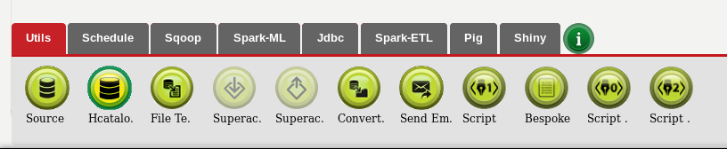
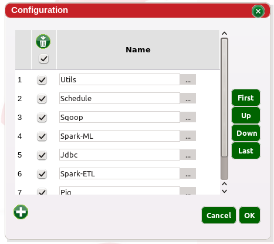
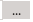
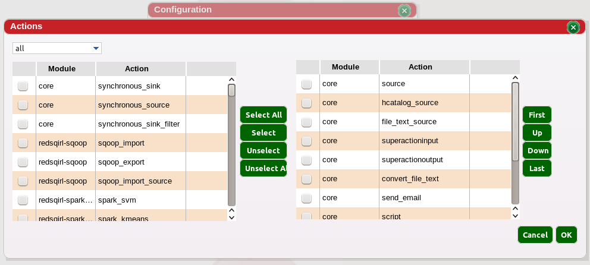

The actions footer is the toolbox used for building workflows. Workflows are composed of one or several actions dragged from the footer.The footer is organized in tabs, so the user can find the tool they need more easily. Tabs include one or several actions and an action can be included in several tabs. Tabs can be generated automatically and be modified at any time by the user.
Click on to open the Tabs editor. New tab can be created by clicking on . A tab can also be renamed in this view.
To configure the actions further, the user can click on the ellipsis button . The content of the tab can be edited in this view. The actions are organized by packages and models on the left. The actions available in the menu are on the right. ‘Core’ contains the actions provided directly by Red Sqirl.
